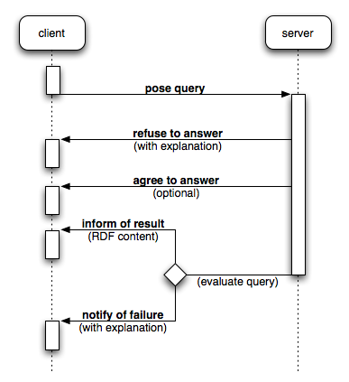
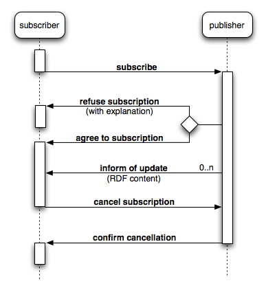

|
|

|
Copyright © 2011 Joshua Shinavier. Some rights reserved.
RDFAgents is a messaging protocol for real-time, peer-to-peer knowledge sharing on the Semantic Web. It patterned after, and designed to interoperate with Linked Data, but extends Linked Data principles to support a "word of mouth" style of information discovery over a variety of communications protocols. It is geared towards ubiquitous Semantic Web computing, lightweight devices with variable network connectivity, and highly reactive, event-driven interfaces to Semantic Web services.
This specification defines a data model based on RDF and Named Graphs, a messaging infrastructure based on the FIPA agent standards, and a pair of closely related interaction protocols: one for request-response queries, and another for subscription-based information streams.
This is neither a FIPA standard nor a W3C recommendation. Please direct any comments to josh@fortytwo.net.
describe query form
As the Semantic Web becomes a ubiquitous resource, it has to adapt to computing platforms which are less and less like a rack-mounted Web server and to user interfaces which are less and less like a Web browser. For mobile devices with intermittent network connectivity, such as phones and navigation systems, message-oriented protocols are often more appropriate than the request-response model of HTTP. For applications which demand particularly low latency, such as real-time multimedia, connection-oriented protocols are best. Moreover, it is increasingly important for end-user applications to "talk back" to the Semantic Web, reversing the usual client and server roles in order to broadcast information to their peers.
All of the above are motivation for a message-oriented, transport-agnostic, and peer-to-peer style of information sharing in the manner of agent-based systems. In order to integrate these environments with Semantic Web data and services, this specification introduces a high-level messaging protocol which combines current Semantic Web best practices with FIPA (Foundation for Intelligent Physical Agents), the most widely adopted body of standards for agent-based systems.
Among the many variations on the theme of Semantic Web agents, this protocol focuses specifically on transmitting declarative Semantic Web information from point A to point B while preserving a provenance trail. It takes a minimalist approach to information discovery and retrieval which adapts the "follow your nose" mechanism of Linked Data to a peer-to-peer, conversational mode of interaction supporting RDF data streams as well as one-shot requests for resource descriptions.
This section (Introduction) provides an overview of the rest of the specification and introduces the conventions used throughout.
Section 2 (Data model) of the specification describes the various constituents of the data model (RDF, Named Graphs, RDF Datasets, and the special performative role of the default graph of a dataset) which underlies information sharing in RDFAgents. The representation of agents and graphs in RDF are described, along with a convention for sending and receiving information to and from other agents while recording provenance and attribution metadata.
Section 3 (Messaging) introduces the FIPA infrastructure upon which RDFAgent is based, describes the various types of messages which are used in the protocol, and defines rules and formats for transmitting RDF content.
Section 4 (Interaction protocols) describes the Query and Publish-Subscribe interaction protocols which guide the flow of a conversation between two agents exchanging information in a request-response pattern or a subscription-based pattern, respectively. Exceptions to the normal interaction flow are also specified.
Section 5 (FIPA compliance) describes the relationship between an RDFAgents implementation and the FIPA standards to which it conforms. Mandatory features of FIPA which are minimized in RDFAgents, as well as optional features which are omitted, are described along with additional constraints imposed by RDFAgents above and beyond FIPA.
Section 6 (Usage patterns) discusses several practical aspects of agent-based knowledge sharing, including reasoning over the RDFAgents provenance trail, publishing data in a way analogous to Linked Data on the Web, and integrating agents with other RDF streaming technologies.
Appendix A (Domain language and ontology) defines the FIPA domain ontology and the language of S-expressions according to which RDFAgents queries and error explanations are formatted. Appendix B (References), Appendix C (Acknowledgements), and Appendix D (Changes) are self-explanatory.
Unless otherwise noted in the section heading, all sections and appendices in this document are normative.
In this document, all examples assume the following namespace prefix bindings:
| Prefix | URI |
|---|---|
dc: |
http://purl.org/dc/terms/ |
ex: |
http://example.org/ |
foaf: |
http://xmlns.com/foaf/0.1/ |
rdfg: |
http://www.w3.org/2004/03/trix/rdfg-1/ |
sioc: |
http://rdfs.org/sioc/ns# |
swp: |
http://www.w3.org/2004/03/trix/swp-2/ |
xsd: |
http://www.w3.org/2001/XMLSchema# |
All examples of RDF Datasets (i.e. collections of Named Graphs) in this document use TriG, a particularly human-readable RDF serialization format supporting Named Graphs. For simplicity, namespace declarations are omitted from the beginning of each example; all namespaces are assumed to be defined as above. For example, the following:
{
ex:rdfnews a foaf:Agent .
}
is an abbreviation for:
@prefix ex: <http://example.org/> .
@prefix foaf: <http://xmlns.com/foaf/0.1/> .
{
ex:rdfnews a foaf:Agent .
}
Examples of SPARQL queries (see [SPARQL]) also omit namespace declarations. For example:
SELECT ?agent ?address WHERE {
?agent foaf:mbox ?address .
}
Examples of messages and content expressions in FIPA's Agent Communication Language are given using their string representation (see [FIPA SC00070I]). They resemble nested lists as in Lisp. For example, here is a simple ACL message:
(inform-done
:sender (agent-identifier
:name http://example.org/rdfnews
:addresses (sequence xmpp:rdfnews@example.org))
:receiver (set (agent-identifier
:name http://fortytwo.net/agents/smith
:addresses (sequence xmpp:smith@fortytwo.net)))
:protocol fipa-subscribe
:conversation-id 089f5b468e)
Information sharing in RDFAgents is based on the exchange of RDF data and Named Graph metadata. For details on the RDF and the Named Graph data models, see [RDF Concepts] and [Named Graphs], respectively. More specifically, agents exchange collections of named graphs, or RDF Datasets, which are defined as in SPARQL (see [SPARQL]). An RDF Dataset consists of zero or more graphs (where each graph contains zero or more statements), each named by an IRI, as well as a single unnamed graph which plays a special role in RDFAgents.
RDFAgents recognizes only one basic relationship between an agent and a graph: that of assertion.
The propositional attitude of assertion is inherited from FIPA's inform
and related communicative acts (see [FIPA SC00037J]) and is equated with the act of
publishing an RDF graph on the Semantic Web.
An agent which asserts a graph thereby asserts the truth of each RDF statement in the graph
as a proposition about the world.
For each message sent or received by an agent, there is a distinguished, default graph of statements which are subject to the propositional attitude of the message. Statements included in the default graph of an assertional message (see below) are thereby asserted to be true by the sender of the message, while the attitude of the sender towards any graph apart from the default graph is a matter of vocabulary, community convention, and interpretation by the receiver, and is not specified by RDFAgents.
The default graph of a message cannot be referred to, and no two messages share the same default graph. As a result, the information directly asserted in a message cannot be qualified with additional metadata, and is to be interpreted as a claim of absolute truth. On the other hand, provenance metadata may be attached to the information asserted in a previous message through the mechanism of graph renaming described below.
An agent in RDFAgents is not only an actor capable of exchanging messages with other agents, but also a first-class entity in the Semantic Web descriptions, or RDF Datasets, carried by messages. Agents are capable of referring to themselves and to each other, an agent's FIPA identity (which is used for the addressing and routing of messages) being bound in a one-to-one fashion with its Semantic Web identity.
An agent in RDFAgents must identify itself with a single, globally unique Semantic Web URI, and supply this as its FIPA name in each message it sends (see below for details on FIPA agent identifiers). The agent may also use this URI in self-referential descriptions. When an agent receives an assertional message from another agent, it associates the FIPA name of the sender with the corresponding URI.
RDFAgents uses a vocabulary drawn from the Named Graphs [NG], Friend of a Friend [FOAF], and Semantic Web Publishing [SWP] ontologies in order to make statements about named graphs and agents. SWP serves to annotate graphs with provenance metadata, capturing "who said what" relationships between graphs and agents, while FOAF serves to associate agents with their contact information, supporting a "word of mouth" style of agent and information discovery.
Specifically, graphs are represented as instances of
rdfg:Graph,
and agents are represented as instances of
foaf:Agent.
An asserted graph is also implicitly a warrant or warrant graph in the sense of SWP:
it constitutes a relationship between a set of statements and the authority or agent which
asserted them.
This relationship is expressed with the
swp:assertedBy and
swp:authority properties.
Finally, agents are annotated with FIPA contact information using the
foaf:mbox property
(typically used with mailto URIs, but compatible with other URI schemes
such as http and xmpp).
Note: several features of the Semantic Web Publishing vocabulary are not required by this specification, although some are suitable for implementation-specific extensions. For example, there is no built-in method of digitally signing named graphs, and SWP's notion of the validity period of a warrant is not used: like the RDF/XML documents of the Web of Data, the information asserted in messages has no temporal or contextual qualifications.
Although there are several types of messages exchanged by agents (see below),
only assertional messages
(i.e. messages with RDF content and which use the FIPA inform-ref performative)
carry Semantic Web information.
Each assertional message sent or received by an agent carries an RDF Dataset, or collection of named graphs, in which there are two distinguished resources:
This will be referred to as the sender's dataset. It is the RDF Dataset which is visible in serial form as the content of the message. Upon accepting an assertional message, the receiving agent must apply the following transformation to the sender's dataset:
rdfg:Graph,
and add a swp:assertedBy self-link
foaf:Agent
and add a foaf:mbox link
from the sender to each of its transport addresses
(see below)
swp:authority link
from the (previously) default graph to the sender
Optional metadata may be included, as well, such as a timestamp or a certificate. All new metadata belongs to the new default graph.
The result of this transformation, called the receiver's dataset, is independent of the communicative act itself, yet captures the informational content and assertional intent of the message. It also serves to record a provenance trail which gives due credit to information providers while supporting information consumers in deciding which information to accept and in discovering further information. In a real-world application, the receiver's dataset can be added to a local RDF store for query answering, or sent verbatim to other agents, who may either trust to its accuracy or verify it by contacting the sender directly.
Example of a sender's dataset (of agent ex:rdfnews):
{
ex:article137 a sioc:Post ;
dc:title "1st Beijing International Film Festival kicked off on Saturday" ;
dc:created "2011-04-25T10:43:35.000Z"^^xsd:dateTime ;
sioc:topic <http://dbpedia.org/resource/Beijing> .
}
A corresponding receiver's dataset (of agent ex:syndicator):
ex:f93bbef965 {
ex:article137 a sioc:Post ;
dc:title "1st Beijing International Film Festival kicked off on Saturday" ;
dc:created "2011-04-25T10:43:35.000Z"^^xsd:dateTime ;
sioc:topic <http://dbpedia.org/resource/Beijing> .
}
{
ex:f93bbef965 a rdfg:Graph ;
swp:assertedBy ex:f93bbef965 ;
swp:authority ex:rdfnews .
ex:rdfnews a foaf:Agent ;
foaf:mbox <xmpp:rdfnews@example.org> .
}
A second-degree receiver's dataset (of agent ex:consumer):
ex:f93bbef965 {
ex:article137 a sioc:Post ;
dc:title "1st Beijing International Film Festival kicked off on Saturday" ;
dc:created "2011-04-25T10:43:35.000Z"^^xsd:dateTime ;
sioc:topic <http://dbpedia.org/resource/Beijing> .
}
ex:4cbf3b9acd {
ex:f93bbef965 a rdfg:Graph ;
swp:assertedBy ex:f93bbef965 ;
swp:authority ex:rdfnews .
ex:rdfnews a foaf:Agent ;
foaf:mbox <xmpp:rdfnews@example.org> .
}
{
ex:4cbf3b9acd a rdfg:Graph ;
swp:assertedBy ex:4cbf3b9acd ;
swp:authority ex:syndicator .
ex:syndicator a foaf:Agent ;
foaf:mbox <xmpp:syndicator@example.org> .
}
RDFAgents is layered on top of the FIPA standards, which specify most aspects of agent management and message exchange. Most of this section will discuss only those aspects of agent messaging which are unique to RDFAgents (for more information on FIPA, see Section 5).
Briefly, agents operate within an RDFAgents platform, which is a concrete implementation of this specification and the underlying FIPA standards. Generally, an RDFAgents implementation is expected to be realized as a lightweight extension of an existing FIPA implementation such as JADE or FIPA-OS. An agent is an entity capable of sending and receiving messages, possibly obeying one or more well-defined interaction protocols. Agents communicate by exchanging messages which represent speech acts, and which are encoded in an agent communication language.
RDFAgents uses the least expressive subset, fipa-sl0,
of FIPA's standard Semantic Language [FIPA SC00008I]
for agent communication.
The Semantic Language is based on S-expression syntax,
as in the Lisp family of programming languages,
and permits the expression of propositions or statements of truth,
actions representing speech acts,
and references to objects in the domain of discourse.
For each FIPA message there is a distinct performative, which identifies the type of communicative act constituted by the message (see [FIPA SC00037J]). The performatives used within RDFAgents include:
cancel: requests the cancellation of a subscriptionfailure: indicates an error in query answering or stream processinginform-done: acknowledges cancellation of a subscriptioninform-result: informs an agent of an update or the result of a querynot-understood: indicates a communication errorquery-ref: poses a queryrefuse: refuses a query or a subscription requestsubscribe: requests a subscription to a stream of updates
Of these, only inform-ref, query-ref, and subscribe
deal with Semantic Web content (queries and datasets).
The ability to send messages to other agents in an asynchronous,
transport-agnostic fashion is built in to any concrete FIPA implementation.
In order to send a message, an agent needs the recipient's name, which in RDFAgents is a URI,
and one or more transport addresses, which are also URIs.
An agent can "reply" to a message in an already-initiated interaction
by using the name and transport addresses supplied in the sender field of the that message.
In order to initiate an interaction, however, an agent needs to have acquired the identity of the recipient from some other source. The most basic way to do so in RDFAgents is to issue a SPARQL query over all accepted statements, e.g. in order to contact the authority responsible for a previously asserted graph:
SELECT ?graph ?agent ?address WHERE {
?graph swp:assertedBy ?warrant .
?warrant swp:authority ?agent .
?agent foaf:mbox ?address .
}
This gives the agent enough information to send a message, provided that graph metadata was recorded in the manner specified above and at least one of the relevant transport protocols is supported.
Agents should supply all of their contact information, i.e. transport addresses, in each message sent, so as to give the other party (as well as second-hand information consumers) as many options as possible for initiating new interactions.
Note that the initiator of an interaction in either the Query or Publish-Subscribe protocol
must supply a globally unique conversation-id for use in every message in the interaction.
This allows an agent to carry on any number of concurrent conversations with other agents,
and to make good use of records of past conversations.
The propositional content of a message is expressed in a FIPA content language,
for which RDFAgents uses either fipa-sl0
or one of a number of special-purpose languages based on RDF document formats,
depending on role played by the message.
For example, an agent uses fipa-sl0
to subscribe to a stream of updates about a Semantic Web resource,
while the content of the updates it receives is expressed in TriG, N-Quads, or another RDF format.
In general, RDF content is used only for assertional messages,
which represent claims about the world.
Messages for all other purposes
(for example, posing a query, requesting or confirming a subscription)
use fipa-sl0 or nothing at all.
FIPA SL content in RDFAgents is explicitly grounded in a domain ontology with the name
rdfagents (see below for details),
while RDF content is implicitly grounded in the universal representational space of the Semantic Web.
Throughout this specification, when a message is required to use the rdfagents domain ontology,
its content is understood to be expressed in the fipa-sl0 content language, and vice versa.
This must be indicated in each message through the use of the FIPA
language and ontology parameters
(see [FIPA SC00061G]).
RDFAgents defines the following RDF-based content languages:
rdf-ntriples: the language of expressions in N-Triples [N-Triples],
a line-based, plain-text format for RDF graphs.
In RDFAgents, every N-Triples triple represents a statement in the default graph.
rdf-turtle: the language of expressions in the Turtle [Turtle]
plain-text format.
All statements belong to the default graph.
rdf-n3: the language of expressions in the N3-rdf subset
of Notation3 [Notation3],
itself a superset of N-Triples and Turtle.
All statements belong to the default graph.
rdf-xml: the language of expressions in RDF/XML [RDF/XML],
the most widely supported RDF format.
All statements belong to the default graph.
rdf-nquads: the language of expressions in the N-Quads [N-Quads] format,
which extends N-Triples with context.
In RDFAgents, the context component of an N-Quads tuple must be a graph name.
If a tuple has no context component, it represents a statement in the default graph;
otherwise, it represents a statement in the graph thus named.
rdf-trig: the language of expressions in the TriG [TriG] format,
which expressly supports Named Graphs and RDF Datasets.
The unnamed graph (if any) in a TriG document is identified with the default graph in RDFAgents.
rdf-trix: the language of expressions in the TriX [TriX] XML-based format
with support for graph names.
Named and unnamed graphs are interpreted as in rdf-trig.
An RDFAgents platform must support at least one of the above languages,
where supporting a language means that the platform can both parse and write the full range of valid
expressions in the language (to and from the corresponding RDF Datasets).
However, an RDFAgents platform need not support all of the above languages.
For the sake of interoperability,
it is recommended that the rdf-xml and rdf-nquads languages be supported,
at a minimum.
Agents may use additional RDF-based content languages which are understood, a priori, by both
participants in a conversation.
For example, an agent which receives a request for query results in "rdf-json"
may choose to respond with a content expression in the
Talis RDF/JSON format.
However, it is up to the requester to validate the response against the expected format.
It is assumed that, for each supported RDF content language,
an RDFAgents implementation conserves the meaning of every RDF Dataset expressible in the language
(i.e. produces an equivalent RDF Dataset) when mapping it to a serial form and back again.
However, the various RDF content languages differ in expressiveness with respect to Named Graphs:
four of them cannot express named graphs at all,
while rdf-nquads cannot express an empty named graph or default graph.
The following rules compensate for these differences.
When mapping a (sender's) RDF Dataset into the RDF content of a message:
When mapping the RDF content of a message into an RDF Dataset:
rdf-nquads content in which every statement is a quad),
let there be an empty default graph
A FIPA agent potentially follows any number of interaction protocols, which govern the flow of a conversation in various contexts. For example, there are FIPA standard protocols for making requests, proposing actions, and negotiating contracts. RDFAgents deals with two, closely related protocols in particular: a Query protocol for simple request-response information sharing and a Publish-Subscribe protocol for event-driven information streams.
Both protocols distinguish between a pair of roles corresponding to an information consumer and an information provider, and every RDFAgent agent must be capable of playing all four roles interchangeably. However, an agent's function in a given role may be minimal, e.g. as a Publish-Subscribe publisher which simply refuses all subscription requests.
Both interaction protocols may be used in combination with any transport protocol supported by the underlying FIPA implementation and which supports ordered delivery of messages (this is true, for example, of the HTTP and XMPP protocols).
The Query protocol allows an agent to request a single chunk of information from another agent.
It is based on the FIPA standard Query Interaction Protocol [FIPA SC00027H]
identified by fipa-query.

Figure 1: the Query protocol
The Query protocol involves two otherwise equal participants which assume the roles of a client
requesting information from a server.
The client initiates a Query interaction by posing a query to the server in the form of a FIPA
query-ref message,
where the query is expressed using an RDFAgents query form (see below)
in the fipa-sl0 content language.
Upon receipt of the query, the server either agrees or refuses to evaluate it.
If the server refuses, it sends a refuse message to the client
whose content is an explanation in the fipa-sl0 content language, completing the interaction.
If the server agrees, it chooses whether to send an agree notification to the client
or to proceed directly to the evaluation of the query.
After the answer to the query (an RDF Dataset) has been determined,
the server completes the interaction with an inform-result message
carrying the dataset in one of the RDF content languages.
describe query form
This version of RDFAgents supports exactly one type of query, called describe,
which accepts a single RDF resource and returns an RDF Dataset of information about it.
This is similar to SPARQL's DESCRIBE query form
in that the way in which the server selects an appropriate chunk of information describing the given resource is
unspecified.
The relationship of a describe query result to its argument is analogous to the relationship of
an associated RDF description with a dereferenceable HTTP URI in Linked Data.
The client may request the query result to be expressed in a particular RDF format
by indicating the corresponding RDF content language with the language parameter.
When this is the case, the server must either return results in the specified language,
or raise an exception in the form of a failure message if that language is not supported
(see below for more information on exceptions).
Otherwise, the query result may use any one of the built-in RDF content languages listed
above.
Example of a query message:
(query-ref
:sender (agent-identifier
:name http://fortytwo.net/agents/smith
:addresses (sequence xmpp:smith@fortytwo.net))
:receiver (set (agent-identifier
:name http://example.org/rdfnews
:addresses (sequence xmpp:rdfnews@example.org)))
:protocol fipa-query
:conversation-id c976b710a5
:language fipa-sl0
:ontology rdfagents
:content "(describe (uri http://dbpedia.org/resource/Beijing) :language rdf-trig)")
Query result:
(inform-result
:sender (agent-identifier
:name http://example.org/rdfnews
:addresses (sequence xmpp:rdfnews@example.org))
:receiver (set (agent-identifier
:name http://fortytwo.net/agents/smith
:addresses (sequence xmpp:smith@fortytwo.net)))
:protocol fipa-query
:conversation-id c976b710a5
:language rdf-trig
:content "
@prefix ex: <http://example.org/> .
@prefix dc: <http://purl.org/dc/terms/> .
@prefix sioc: <http://rdfs.org/sioc/ns#> .
@prefix xsd: <http://www.w3.org/2001/XMLSchema#> .
{
ex:article137 a sioc:Post ;
dc:title \"1st Beijing International Film Festival kicked off on Saturday\" ;
dc:created \"2011-04-25T10:43:35.000Z\"^^xsd:dateTime ;
sioc:topic <http://dbpedia.org/resource/Beijing> .
}")
In RDFAgents, the inform-result message which supplies the query result
has the same propositional status as an inform message
(see [FIPA SC00037J]):
it is an assertion by the server that the content of the message is a true proposition,
or in RDFAgents terms,
that all statements in the default graph of the sender's dataset are true.
Furthermore, it is an assertion not only to the client which issued the query,
but to all potential information consumers,
making the act of sending such a message analogous to that of publishing a document on the Semantic Web.
After constructing the receiver's dataset for the query result, the client may pass it on to any other agent, at any time, simply by including it in the sender's dataset of another message.
At any point in a Query interaction,
the client or server can inform the other party that it did not understand what was communicated,
possibly ending the interaction.
This is accomplished with a not-understood message which optionally contains an error explanation
in the rdfagents domain ontology.
If the server understands the query but fails to produce a query result,
it must send a failure message to the client with an explanation in the
rdfagents domain ontology, ending the interaction.
See below for more information on error explanations.
In addition, a Query interaction may be cancelled by the client at any time
(i.e. after issuing the query and before receiving a query result) by initiating the FIPA Cancel meta-protocol
using a cancel message.
The Publish-Subscribe protocol enables event-driven streams from information providers to information consumers
according to topics of interest.
It is based on the FIPA standard Subscribe Interaction Protocol [FIPA SC00035H]
identified by fipa-subscribe.

Figure 2: the Publish-Subscribe protocol
The Publish-Subscribe protocol involves two otherwise equal participants
which assume the roles of a subscriber requesting a stream of informative updates from a publisher.
A Publish-Subscribe interaction begins with the subscriber issuing a subscription request
in the form of a FIPA subscribe message.
The language, ontology and content of this message
are subject to the same constraints as a query in the Query protocol,
the only difference being the performative and the protocol field of the message.
Specifically, the subscription request must contain a describe query form
in the fipa-sl0 content language whose argument is the topic of the desired stream.
Upon receipt of the subscription request, the publisher either agrees or refuses to
register a corresponding subscription.
If the publisher refuses, it sends a refuse message to the client
whose content is an explanation in the fipa-sl0 content language, completing the interaction.
If the publisher agrees, it must send an agree notification as its first message to the
subscriber in the current interaction (i.e. before it sends any updates).
Updates are communicated by the publisher to the subscriber in the same manner as Query results,
using inform-ref messages carrying RDF Datasets.
The only difference between Query results and Publish-Subscribe updates
(apart from the protocol field) is that there is at most one result per query,
while there are any number of updates per subscription.
Unless an exception occurs (see below),
the subscription remains active until it is cancelled by the subscriber with a cancel message,
which the publisher acknowledges with an inform-done message before terminating the subscription
and thereby completing the interaction.
At that point, no further updates should be sent.
Example of a subscription request:
(subscribe
:sender (agent-identifier
:name http://fortytwo.net/agents/smith
:addresses (sequence xmpp:smith@fortytwo.net))
:receiver (set (agent-identifier
:name http://example.org/rdfnews
:addresses (sequence xmpp:rdfnews@example.org)))
:protocol fipa-subscribe
:conversation-id 089f5b468e
:language fipa-sl0
:ontology rdfagents
:content "(describe (uri http://dbpedia.org/resource/Beijing) :language rdf-trig)")
Subscription confirmation:
(agree
:sender (agent-identifier
:name http://example.org/rdfnews
:addresses (sequence xmpp:rdfnews@example.org))
:receiver (set (agent-identifier
:name http://fortytwo.net/agents/smith
:addresses (sequence xmpp:smith@fortytwo.net)))
:protocol fipa-subscribe
:conversation-id 089f5b468e)
An update:
(inform-result
:sender (agent-identifier
:name http://example.org/rdfnews
:addresses (sequence xmpp:rdfnews@example.org))
:receiver (set (agent-identifier
:name http://fortytwo.net/agents/smith
:addresses (sequence xmpp:smith@fortytwo.net)))
:protocol fipa-subscribe
:conversation-id 089f5b468e
:language rdf-trig
:content "
@prefix ex: <http://example.org/> .
@prefix dc: <http://purl.org/dc/terms/> .
@prefix sioc: <http://rdfs.org/sioc/ns#> .
@prefix xsd: <http://www.w3.org/2001/XMLSchema#> .
{
ex:article137 a sioc:Post ;
dc:title \"1st Beijing International Film Festival kicked off on Saturday\" ;
dc:created \"2011-04-25T10:43:35.000Z\"^^xsd:dateTime ;
sioc:topic <http://dbpedia.org/resource/Beijing> .
}")
As in the Query protocol, an inform-result message containing an update
has the same propositional status as an inform message:
it is an assertion by the publisher, to all potential information consumers,
that all statements in the default graph of the sender's dataset are true.
This provides a method of publishing data streams on the Semantic Web which is analogous to the publishing of
RDF documents.
After constructing the receiver's dataset for the update, the client may pass it on to any other agent, at any time, simply by including it in the sender's dataset of another message.
Exceptions to the Publish-Subscribe protocol are analogous to those of the Query protocol (see above). A depiction of the FIPA Cancel meta-protocol is included in Figure 2 because the eventual cancellation of a subscription is a normal and expected event, unlike the cancellation of a query.
The FIPA Abstract Architecture [FIPA SC00001L] defines architectural elements of agent platforms and their relationships, and provides guidelines for the instantiation and interoperability of agent systems.
In order for a concrete architectural specification to be FIPA compliant, it must have certain properties. First, the concrete architecture must include mechanisms for agent registration and agent discovery and inter-agent message transfer. These services must be explicitly described in terms of the corresponding elements of the FIPA Abstract Architecture.
Any concrete implementation of RDFAgents, or RDFAgents platform, must realize the mandatory elements of the FIPA Abstract Architecture. The following subsections will describe additional constraints imposed by RDFAgents with respect to FIPA compliance, and discuss optional elements of FIPA which are not required by RDFAgents. All elements of FIPA not discussed in the following are to be considered independent of RDFAgents, and may be realized in implementation-specific ways.
...RDFAgents does not deal with intention, only with the communication of propositions which are absolutely true or false...
FIPA defines an agent identifier (AID) as an extensible collection of parameter-value pairs comprising a name or globally unique identifier for the agent, zero or more transport addresses at which the agent can receive messages, and zero or more resolvers or name resolution service addresses.
At creation or registration time, a FIPA agent must be given an agent name which has a durable relationship with the agent it identifies and which is chosen in such a way as to ensure global uniqueness. An agent name should have no semantics:
It should not encode any actual properties of the agent itself, nor should it disclose related information such as agent transport-description or location. It should also not be used as a form of authentication of the agent.
To facilitate the RDF description of agents, the name of an RDFAgents agent must be a Semantic Web URI which should be drawn from a URI space controlled by its owner. As such, it should be an HTTP URI associated with an RDF description of the agent which can be obtained by dereferencing the URI, in the manner of Linked Data.
The resource denoted by the agent name is implicitly an instance of
foaf:Agent
within RDFAgents and should be explicitly declared as such in RDF descriptions mentioning the agent.
The Semantic Web URI of a foaf:Person
may be used as an agent name
only if the agent and the person thus identified are identical for the purpose of information exchange.
This may be the case, for example, when an agent acting as a personal assistant is given the task of sending and
receiving
messages on behalf of its owner.
Note, however, that any discoverable contact information of the person which is not valid contact information of the
agent may lead to unwanted and ineffectual messages from other agents.
Additionally, it should be kept in mind that the contact information of an agent is shared freely in RDFAgents,
much as URIs are shared in Linked Data,
while the sharing of personal contact information is subject to concerns of privacy and spam control.
A transport address is a physical address at which an agent can be contacted. It is usually specific to a particular protocol (for example, HTTP or XMPP). A given agent may support multiple methods of communication and therefore may have multiple transport addresses. Since an agent's transport addresses are used as authoritative contact information in RDF descriptions of the agent (see above), it is necessary for an agent's transport address(es) to be compatible with such use.
The EBNF syntax of a FIPA transport address is the same as that of a URL given in [RFC 2396].
It is thereby also a URI, and can be used as a resource name in RDF descriptions of the agent.
The the scheme part of the transport addresses of an agent in RDFAgents should correspond
to a well-known messaging protocol (e.g. http or xmpp),
and their scheme-specific part should serve to identify the recipient in an unambiguous, global fashion.
Every agent in an RDFAgents platform requires at least one transport address.
For compatibility with foaf:mbox
(an inverse functional property), no two agents may share the same transport address(es).
The agent platform itself does not require a transport address and does not need to send or receive messages.
RDFAgents does not require the use of FIPA's resolvers parameter of the agent ID (although it does not probihit its use). No specialized lookup services are provided for agent names. Instead, transport addresses are inferred from the RDF descriptions of agents. An RDFAgents platform must be capable of reading RDF descriptions and applying at least the following rule for the mapping of contact information to transport addresses.
Every RDFAgents platform must include a list of transport-level services with which it is capable of interoperating. This list may contain as few as a single service, identified by the URL of its home page. Each service must be bound to a transport protocol such that, when the platform is provided with the service-specific identifier of a recipient, it can send a message to that recipient using the associated protocol.
For example, the following RDF description provides sufficient information for the sending of a message over
XMPP to the agent identified by rdfnews@example.org on Jabber:
{
ex:rdfnews a foaf:Agent ;
foaf:name "RDF News Agent" ;
foaf:account [
a foaf:OnlineAccount ;
foaf:accountServiceHomepage <http://www.jabber.org/> ;
foaf:accountName "rdfnews@example.org" ] .
}
In order to make use of this information, an RDFAgents platform must interoperate with the service
identified by http://www.jabber.org/,
which involves knowing that it is an XMPP-based service, supporting the XMPP protocol, and having a Jabber account.
FIPA Agent Management [FIPA SC00023K] provides the normative framework within which FIPA agents exist and operate. It establishes the logical reference model for the creation, registration, location, communication, migration and retirement of agents. A mandatory component of this model is the agent management system, or AMS, which exerts supervisory control over access to and use of the platform. It provides agent identifiers to agents and maintains a directory of identifiers, providing a white pages service for all agents.
However, the AMS is no more than an internal component of a conforming RDFAgents implementation; this specification is concerned only with peer-to-peer communication between platforms (as opposed to intra-platform communication), and there is no operation within RDFAgents which requires the sending of a message to the AMS of a remote platform.
RDFAgents neither requires nor prohibits the use of FIPA's optional directory facilitator, which maintains an index of agents in a platform and provides a yellow pages service for agents. The role of the directory facilitator is considered to be fulfilled in RDFAgents by the "word of mouth" mechanism of service discovery via RDF descriptions.
All FIPA agents must have access to at least one message transport service,
or concrete implementation of a protocol for sending and receiving messages.
The ways in which transport addresses are mapped to transport protocols
(e.g. as an xmpp: URI is mapped to the XMPP protocol),
as well as the ways in which an agent chooses from among different transport addresses for the same agent,
are not specified in FIPA or RDFAgents.
RDFAgents does not make use of FIPA's experimental RDF content language [FIPA XC00011B], which predates Named Graphs (using RDF reification for statement metadata) and differs in intent from RDFAgents, which separates the representation of knowledge in RDF with Named Graphs from the representation of actions in FIPA's built-in Semantic Language.
This specification defines the rules by which provenance information is to be recorded throughout the process of information exchange, creating an "A says that B says X" pattern of nested assertions. It does not specify how an agent should reason upon the provenance trail in order to decide which information to accept as true. There are many possible options, and this choice is best left to the application. However, some straightforward strategies are illustrated in the following. Given an RDF Dataset such as the receiver's dataset of a message, the problem is to either accept or reject each graph in the dataset, merging the accepted graphs into a single graph of accepted statements.
Strategy #1: It's All Good. Accept all graphs. This is the simplest possible strategy (apart from "None of it is good", that is), and the one used by most applications which consume heterogeneous Semantic Web data. In the absence of a clear set of conventions for expressing provenance metadata, all you can do is to accept information arbitrarily and hope for the best. This strategy ignores not only the variable trustworthiness of information providers, but also the fact that graphs may be provided (or quoted) in a message without necessarily being asserted. Nonetheless, it may be good enough for some applications, such as data browsers and crawlers.
Strategy #2: The Grapevine. This strategy is a little more sophisticated than the above, in that it only accepts graphs which have been explicitly asserted... or which have been asserted to have been asserted, and so on. It proceeds as follows.
swp:assertedBy statements in the graph(s) just accepted.Strategy #3: Authoritative Sources. To add an element of trust to the above, we can select not only asserted graphs, but also the agents who asserted them. I.e. use this SPARQL query for step (2):
SELECT ?graph ?agent WHERE {
?graph swp:assertedBy ?warrant .
?warrant swp:authority ?agent .
}
...and apply some criterion to agent
(perhaps looking it up in a global whitelist of trusted peers or blacklist of known spammers)
and rejecting graph if the agent fails to meet the criterion.
In application-specific contexts, additional metadata relating to belief and trust could be used
to support a Web of Trust among communicating agents.
The describe query operation supported by RDFAgents is purposely similar to
the convention of dereferencing HTTP URIs on the Web of Data.
This is a very simple way of interacting with Semantic Web datasets which has proven effective.
However,
The Semantic Web isn't just about putting data on the web. It is about making links, so that a person or machine can explore the web of data. With linked data, when you have some of it, you can find other, related, data.
In order to support such "follow your nose" information discovery, agents need a set of best practices for publishing data in a way which facilitates exploration. By analogy to the four Linked Data principles, the following are suggested:
For example, if an information consumer asks the agent named http://example.org/info
about the thing named http://dbpedia.org/resource/Beijing,
that agent should respond with an RDF Dataset about the city of Beijing.
The description should include links to related things such as China,
Beijing universities and historical landmarks, and so on.
Furthermore, if the agent has information about Beijing from other sources,
such as a news service http://foo.com/news or a weather service http://bar.net/weather,
some of that information should be included in the dataset along with appropriate attribution metadata.
This gives the information consumer the option of contacting those sources directly
in order to get more detailed or more up-to-date news or weather information about Beijing.
For more information on Linked Data, see the [Linked Data Book].
The similarity of the Query and Publish-Subscribe interaction protocols makes them nearly interchangeable from the point of view of the information consumer. An agent which ordinarily requests a single RDF description of a resource, in the manner of a Linked Data client, can just as well subscribe to an open-ended stream of information about that resource, responding to updates in the same way that it responds to query results. For an agent, the gap between "static" and "real-time" Semantic Web data is a small one.
On the data provider's side, there are a number of existing tools for generating Semantic Web data streams, among them C-SPARQL, a SPARQL dialect for continuous queries, SPARQLPuSH, which transports RDF updates over HTTP, and services such as TwitLogic which produce RDF streams based on specific real-time data sources.
The RDFAgents domain ontology, identified by rdfagents,
provides a simple model of queries and error explanations for use in FIPA messages.
It is used in combination with a grammar of legal S-expressions in the fipa-sl0 content language.
A URI reference
is constructed with the uri function,
whose only parameter expects a Unicode string encoded as described in
[RDF Concepts].
Example of a URI:
(uri http://example.org/ArthurDent)
Literals
are constructed with the function literal with one required parameter,
which expects the label of the literal as the quoted form of a string encoded in Unicode Normal Form C
(as described in [RDF Concepts]),
and optional named parameters language and datatype,
which expect a language tag (see [RFC 3066]) and a URI reference, respectively.
Example of a literal:
(literal "42" :datatype (uri http://www.w3.org/2001/XMLSchema#integer))
Blank nodes cannot be referred to directly.
The describe query form constructs a referential expression for an RDF Dataset
describing some resource (see above).
Its one position-dependent parameter expects the RDF resource (URI reference or literal) to be described,
while an optional language parameter expects an RDF content language.
Built-in content languages include
rdf-n3,
rdf-nquads,
rdf-ntriples,
rdf-trig,
rdf-trix,
rdf-turtle, and
rdf-xml, as described above,
but any string is acceptable.
Example of a query:
(describe (uri http://example.org/ArthurDent) :language rdf-trix)
An error may be defined loosely as any event or circumstance which departs from the ordinary flow of
an interaction and requires explanation.
Error explanations in the rdfagents ontology may (and in some cases, must) be used as the content of a
not-understood, failure, or refuse message.
An error explanation is constructed as an error functional term
containing a type-specific error message.
The latter must apply one of the following functions to a quoted string with a natural-language
description of the error:
external-error: indicates an error which the agent attributes to the other party in the
interaction.
Used when no more specific error type is appropriate, similar to the 400 HTTP response status code.
interaction-expired: indicates that the agent no longer considers the present interaction
to be in progress (for example, if an implicit subscription lease has timed out).
internal-error: indicates an error which the agent attributes to itself.
Used when no more specific error type is appropriate, similar to the 500 HTTP response status code.
invalid-content: indicates that a content entity failed a syntactic or semantic constraint
(for example, on account of a badly-formatted query)
invalid-message: indicates a high-level problem with a message received
(for example, missing content or an unknown protocol).
not-implemented: indicates a non-implemented feature which is necessary in order to
continue normally (for example, an unsupported RDF content language)
unavailable: indicates that the agent is currently busy or otherwise unable to continue
normally with the current interaction, without regard to the form or content of a particular message
The type-specific error message may include additional, implementation-specific arguments.
Example error explanation:
(error (invalid-content "function 'describ' is not defined"))
This work has been supported in various stages by the Tetherless World Constellation and Franz Inc. in collaboration with the Institute of Automation, Chinese Academy of Sciences.
The format of this document is based on W3C and Buzzword.org.uk specifications.
|
|
|